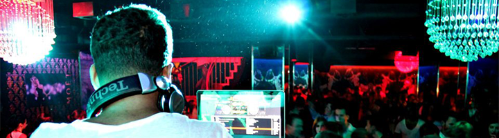

Audio x Visual artist painting with sounds, composer of score for picture, and dance music creator
with features on outlets like Miami New Times to editorial playlists on platforms like YoutubeMusic.
A FRL Oculus Launch Pad alumni, and creator of the Cyberspace Station mini-games series.
Currently a Symphonic Partner artist.

booking: paul@paularthurmusic.com
socials: /djpaularthur
design by: artsandtoys